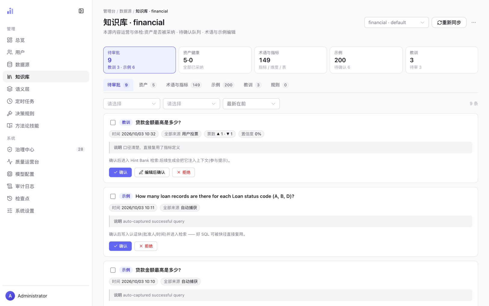
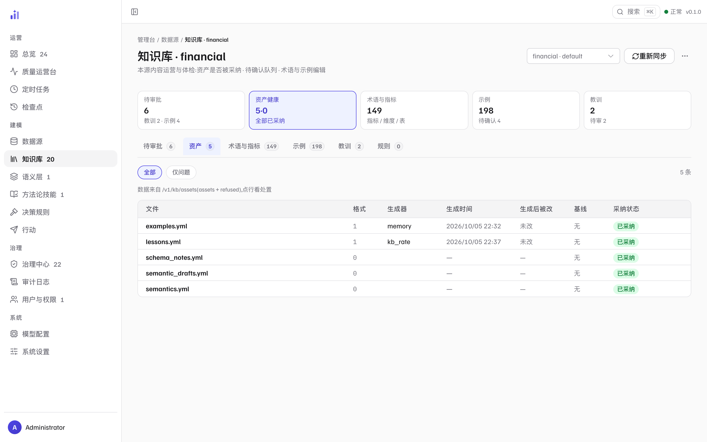

知识库运营
/admin/kb 是知识库（KB）的日常柜台：用户反馈的草案在这里审批，
资产采纳状态在这里体检，术语与示例在这里编辑。
YAML 文件是唯一真源——这一页的每个动作，最终都落成 .trove/kb/<ds>/ 里的一次文件变更。
初始化：一个源的知识从这里开始
数据源注册后、对用户可见前，必须跑一次初始化（右上角 ⋯ 菜单 →「初始化」）。
初始化调用 LLM 起草表注释与语义模型，加上确定性生成的术语与模板，产出六份 YAML 资产
（schema_notes.yml / semantics.yml / examples.yml 等）。
没有 KB 的源不提供给用户——这是「接入即建模」的硬边界。
| 动作 | 做了什么 | 人的编辑 | 代价 / 风险 |
|---|---|---|---|
| 重新同步 | 重读磁盘 YAML，刷新检索镜像 | 保留 | 零 LLM 调用；检索命中异常时的第一个动作 |
| 初始化（首次） | 生成全部 KB 资产 | — | 调用计费 LLM；长任务带阶段进度 |
| 重新初始化（合并） | 再次生成，按条目与现有基线合并 | 按条目存活 | 调用计费 LLM |
| 覆盖重建（危险） | 忽略合并、整份重写文件 | 会丢未合并的手工编辑 | 调用计费 LLM；旧版本可从 git 历史回滚 |
| 删除知识库（危险） | 删除 .trove/kb/<ds>/ 全部资产 + 清空检索镜像 | 文件可从 git 历史找回 | 检索立即失效，用户端该源不再可用 |
四个动作共用同一个确认对话框：标题、后果清单与按钮文案都按破坏半径变化—— 「重新同步」的说明是「重读磁盘 YAML 刷新镜像（人的编辑保留）」， 「覆盖重建」则明确写「未合并的手工编辑会丢失」。执行前读一眼后果清单，不会踩到隐藏代价。
待审批：人在这里把关
用户端的反馈与系统的自动捕获，都先落成待审批草案（绝不直接进检索）。 队列把教训与示例两类草稿聚在一起，逐条给你判断依据。

1 2 3 4- 1五个 KPI——待审批 / 资产健康 / 术语与指标 / 示例 / 教训。每个都是筛选入口：例如「待审批 9」写明构成（教训 3 · 示例 6），点进即过滤。
- 2六个 tab——待审批 / 资产 / 术语与指标 / 示例 / 教训 / 规则，与磁盘上的资产文件一一对应。带数字的 tab 是当前条目数。
- 3草稿卡片的判断依据——类型章（教训 / 示例）、标题、来源与统计（时间、来源、票数、置信度）与「说明」字段。来源告诉你是谁写的：用户投票 / 失败蒸馏 / 好评草稿 / 修正闭环 / 自动捕获 / 手动；票数与置信度是系统对「值不值得采纳」的量化提示，不是替你做的决定。
- 4三个处置按钮——确认 / 编辑后确认 / 拒绝。按钮上方一行写明后果，各类型不同：教训确认后「进入 Hint Bank 检索，后续生成会把它注入上下文」；示例确认后「写入认证块（批准人/时间）并进入检索——好 SQL 可被快径直接复用」。拒绝也会留提交记录，可从 git 历史找回。
队列上还有几个提效开关：
- 来源与排序过滤——按来源（用户投票 / 失败蒸馏 / 好评草稿 / 修正闭环 / 自动捕获 / 手动）筛选；排序支持「最新在前 / 票数优先 / 置信度优先」。
- 批量——勾选多条后出现「确认所选 / 拒绝所选」；批处理逐条报告结果，部分失败会标出并提供「重试」，不会用「全部成功」盖住失败。
- 处理回执——处理过的条目落入「刚刚处理」清单（已确认 / 已拒绝 / 失败，带审计编号），误操作一眼可查。
示例确认时要过一道认证门（结构与质量校验）。被拒的条目会注明 「认证门拒绝：原因」，它不会被写进检索——宁可这条经验晚一点入库，也不让一条坏 SQL 被快径复用。
资产体检：六份文件，谁写的、有没有被改
「资产」tab 把 KB 目录摊开成一张采纳清单：每份 YAML 的来源（生成器）、生成时间、 生成后被改、基线、采纳状态都可见——这是「知识是不是账实相符」的第一现场。

1 2 3 4- 1资产健康 KPI——「5·0」= 已采纳 5 份、被拒 0 份。出现被拒份数时副标题会改为「N 份未被采纳」，提醒存在未生效的资产。
- 2全部 / 仅问题——「仅问题」只留未被采纳或被改动的条目；问题清零时这个 tab 就是一行「全部已采纳」。
- 3血缘列——生成器（如
memory表示自动记忆写回、kb_rate表示用户反馈）与生成时间回答「这条是谁写的、什么时候」；「生成后被改」标记人工是否动过；「基线」标记有无可对照的基线。「格式」是资产文件格式版本：1为当前版本，0为存量旧格式（可迁移）；比代码更新的格式会整份拒读——镜像停留在上一次读懂的样子。 - 4采纳状态——已采纳（进入检索）/ 被拒（未生效）。点任意行打开资产详情抽屉，可以看到处置记录并执行处置动作。
术语与指标：词表在这里补
「术语与指标」tab 是 KB 词表（指标 / 维度 / 表）的编辑面：搜索名称 / 同义词 / 定义， 或「新增术语」补一条（术语名、别名、映射表达式、关联表、定义）。 表格里每条都带表达式与关联数据集——补词之前先看一眼已有表达式的口径，避免造一个同义不同义的词。
这里是词条级的编辑；模型级治理（数据集锚定、lint、漂移、草稿审批、试跑） 在语义层治理。
示例 / 教训 / 规则三个 tab
- 示例——支持搜索问题 / SQL，按「全部 / 待确认」切换，或手动「新增示例」。认证过的示例是快径直接复用的对象：命中即复用 SQL，不走模型。
- 教训——Hint Bank 的两级结构，按「全部 / 待审 / 已确认」切换；每条带说明、来源与票数（▲ / ▼）。教训在生成时被注入上下文（参与提示），「全部确认」可批量放行待审教训。
- 规则——
rules.yml是唯一「人工编写、无写入路径」的资产，本页只读：规则要么在文件里手写，要么不存在。
删除知识库
删除入口在右上角 ⋯ 菜单（危险操作）。确认对话框逐条列出影响面：
删除 .trove/kb/<ds>/ 全部 YAML 资产文件、清空该源的检索镜像（检索立即失效）、
文件可从 git 历史找回、镜像需要重新同步重建。确认之后，该源回到「未初始化」状态——
用户端不可用，直到重新初始化。
删除知识库不等于删除数据源注册（那是数据源页的动作）； 反过来，删除数据源注册也不会删掉 KB 目录。两个动作分开正是为了让「连接出问题」与 「知识作废」不互相绑架。
相关页面
本页截图为真实界面（隔离的演示实例，数据是内置 BIRD 金融演示库）；
可用前端仓库里的 npm run shots 重新生成，_manifest.json 记录每张图的来源提交。